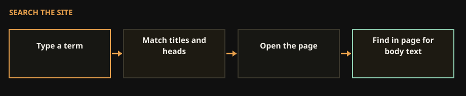
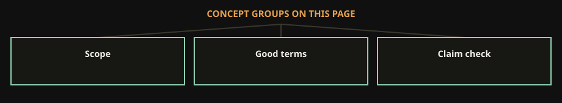

Search the site
Type a term. Search covers page titles and section heads on all pages. Full text search: use a browser find on one page.

How search works here
Search data sits in one local file, assets/search-data.js. The file holds one record per page: a file name, a page title, and all section heads on that page. No server call takes place. No term leaves your machine. Type a term and the list filters at once. A match on a title or a head shows the page link plus the first three heads as context.
Scope limit: search covers titles and heads only, not full body text. That limit keeps the index small and the site fast from disk. For a body term, open a candidate page and use a browser find. For a claim check, go to the Sources page and use a browser find on a claim word: the ledger holds one row per claim set.
Good terms: a tool name such as Codex or Grok, a method word such as oracle, worktree or eval, a person name such as Cherny or Pocock, or a page word such as labs, audit or glossary. Each term maps to heads on the pages that teach that topic, so one search gives a study route, not a pile of weak hits.

Visual map of this page
Three views of one page: a Mermaid flow for work order, a markmap for concept groups, and a read guide for the flow.
Mermaid source, for offline read
flowchart LR A[Term] --> B[Local index file] B --> C[Page links with heads] C --> D[Open page] D --> E[Browser find for body terms]
How to read the flow diagram. Step 1: start at the left box. Step 2: follow each arrow to the next stage. Step 3: at a branch box, read both paths before a choice. Step 4: a loop arrow means work returns for one more pass vs a test.
Markmap: concepts on this page
- Search the site
- Scope
- Titles and heads
- Local file, no server
- Good terms
- Tool names
- Method words
- Person names
- Claim check
- Sources page ledger
- One row per claim set
- Scope